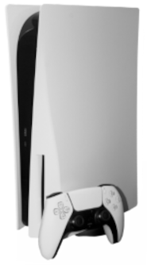

Iniciando aula teste de listas ordenadas e desordenadas
Listas ordenadas
- acordar
- fazer uma oração
- levantar
- arrumar a cama
- tomar café da manhã
- escovar os dentes
- ir para academia andando
- seguda feira treino de peito
- levar garrafa de água
- não esquecer a suplementação pré treino
- voltar para casa andando
- hoda do descanso
- tomar banho
- almoçar
- ler
- Dormir
- não esquecer o remedio de sono
- Leantar as 18:30
- Fazer uma oração
- tomar um café preto puro
- iniciar a leitura(1o-20MIN)
- iniciar aulas
Aulas anteriores com imagens
Nesta parte traremos imagens de (PlayStatyon5 e XBOXseries X)

Dois consoles de ultima geração , mas qual o melhor?
Vamos descobrir agora!
PlayStatyon5
O destaque é a CPU AMD Zen 2,
de 3,5 GHz, e o SSD personalizado de 825 GB
superrápido que, de acordo com a fabricante
pode torná-lo o videogame
"mais rápido do mundo".
XBOX
Ele vem com 10 GB de RAM e 512 GB de armazenamento
SSD com uma taxa de transferência de entrada/saída bruta de 2,4 GB/s
Não inclui nenhuma unidade de disco ótico,
exigindo que o usuário obtenha todo o software via distribuição digital.
Conclusão!
Em geral, o PlayStatyon5 é considerado melhor que o Xbox Series S devido ao seu maior desempenho, capacidade de armazenamento e jogos exclusivos, embora o Series S seja mais acessível e oferece o Game Pass.
Melhor desempenho: O PS5 tem um desempenho superior em termos de potência de processamento, o que se traduz em jogos com gráficos melhores, taxas de quadros mais estáveis e tempos de carregamento mais rápidos.
Jogos exclusivos: A Sony tem uma longa história de jogos exclusivos que são muito populares, e o PS5 é o único lugar para jogá-los.
Capacidade de armazenamento: O PS5 possui um SSD mais rápido e maior do que o Series S, o que significa que você pode instalar mais jogos e ter acesso a eles mais rapidamente.
Preço: O Xbox Series S é significativamente mais barato que o PS5, o que o torna uma opção mais acessível para quem quer entrar no mundo dos consoles da nova geração.
Game Pass: A Microsoft oferece o Game Pass com acesso a uma grande variedade de jogos por uma assinatura mensal, o que pode ser uma grande economia para quem gosta de jogar vários jogos diferentes.
Conclusão: A escolha entre o PS5 e o Xbox Series S depende do seu orçamento e das suas prioridades. Se você busca o melhor desempenho, jogos exclusivos e capacidade de armazenamento, o PS5 é a melhor opção. Se você busca uma opção mais acessível e um grande catálogo de jogos com o Game Pass, o Xbox Series S é uma boa escolha.